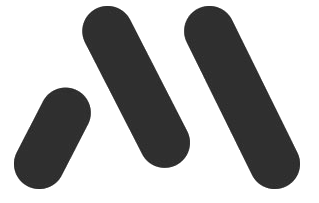
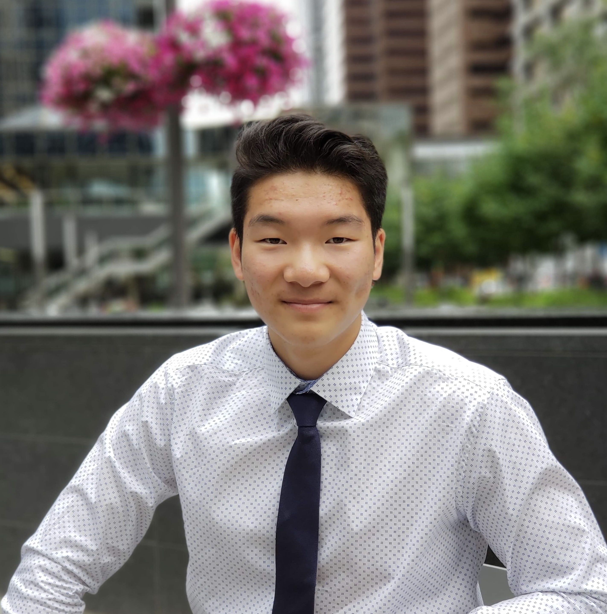

This is the eponymous online home of Max Zhou—
This is the eponymous online home of Max Zhou—
designer, developer, innovator, lifelong learner
and aspiring polymath.
Let's get started!
—— Profile ——
Who am I?

About me
I love tackling tough challenges and thrive
in the face of obstacles. Thought-provoking
issues fuel my passion for growth and ignite
my desire to learn more about the world
around me. I am currently studying Electrical
Engineering at the University of Waterloo and
have an abundance of experience to share in
industry and academia alike. In this portfolio,
I share my experience both in and outside of
the classroom in everything ranging from work
experience, personal projects and extracurricular
activities. Let's create something amazing together.
The Nitty Gritty
Skills
Languages:
C/C++, Java, Python, HTML, CSS, JavaScript,
Matlab, ARM Assembly, VHDL
Tools and Frameworks:
Git, RTOS, CAN Protocol, Quartus Altera,
FPGA Design, IoT, Jenkins, Atlassian Suite
Interests:
Internet of Things (IoT), Autonomous Vehicles
Open Source Projects, Social Good
—— Here's what I've done so far ——

IBM Canada 👁🐝𝗠
Backend Software Developer Intern
Ottawa, Ontario
Incoming backend software developer intern at IBM Canada Software Labs
in Ottawa Ontario.

Ford Motor Company of Canada 🚙
Firmware Developer
Ottawa, Ontario
Our team worked on developing the firmware for the CAN gateway in future
Ford vehicles. We helped fully integrate CAN software from database file
configuration to full CAN routing support through all layers of the software
stack. I worked on improving system parallelism and efficiency by implementing
complete CPU, software stack, and runtime optimization using real-time Vector
APIs and reducing ISR (interrupt service routine) overhead. I also developed
an inter-process communication protocol using reason code.

Watonomous Autonomous Vehicles Team 🚘
Sensor Interfacing Developer
Waterloo, Ontario
Watonomous is the University of Waterloo's student run autonomous vehicles
team competing in the SAE Autodrive Challenge. Our team is made up of four
main divisions (Software, Electrical, Mechanical, and Buisness) as well as
several subteams working towards turning a Chevorlet Bolt into a fully
capable autonomous vehicle. I work on the sensor interfacing team where I
write driver code for our vehicle's sensors such as LiDARs, cameras, and GPS.
This semester I worked on integrating TF transforms to unify the frames of reference
for the sensors.

University of Calgary
Fluid Dynamics Student Researcher 🔬
Calgary, Alberta
Worked as a fluid dynamics student researcher at the University of Calgary
over the summers of 2017 and 2018 where I carried out multi-input and multi-
output (MIMO) system identification on fluid dynamic systems using Matlab and
Simulink to calculate fluid flow parameters. I also experimentally implemented
Buttersworth filters to reduce statistical noise by 77%.